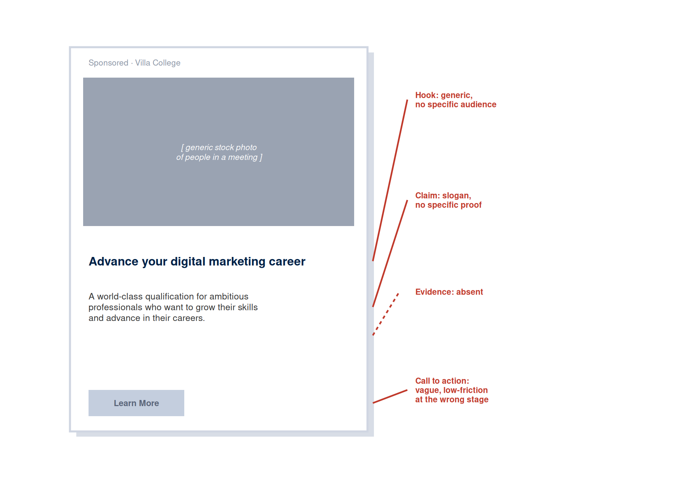
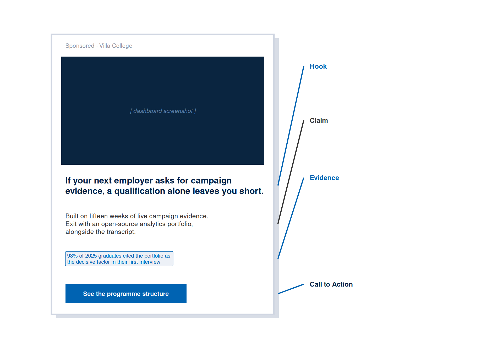

| Activity | Learning Objective Practised |
|---|---|
| 1. Orientation and Teardown | LO7: hook, claim, evidence, call to action, tested against a real quality benchmark |
| 2. Copy Brief Sprint | LO1, LO4: TPB diagnosis and processing route applied to the brief |
| 3. Canva Build Sprint | LO2, LO3: anchoring/priming and framing choice built into a real mockup |
| 4. Critique Carousel | LO7: copy structure, tested against a real phone-scroll reader |
| 5. Fix, Test Plan, Accessibility | LO8: message test design, and LO6: tone, readability, accessibility |
| 6. Class Vote, Share, Upload | LO5: Cialdini principles live-tested, and LO9: evidence versus assumption in the decision record |
Week 4 Tutorial: Copybook and Message Test Build
Tutorial Copybook and Message Test Build
Discussion
1 Orientation and Teardown
⏱ 15 min
Concept check, then a guided teardown of a weak and a strong ad.
Production
2 Copy Brief Sprint
⏱ 10 min
Diagnose the TPB weak link and write a four-line copy brief.
Production
3 Canva Build Sprint
⏱ 40 min
Widen your options with AI, then build and finalise the ad in Canva.
Practice
4 Critique Carousel
⏱ 15 min
Scroll-test a partner’s phone, then answer three critique questions.
Production
5 Fix, Test Plan, Accessibility
⏱ 25 min
Apply one fix, write the message test plan, run the readability check.
Assessment
6 Class Vote, Share, Upload
⏱ 15 min
Live class vote on hooks, gallery share, decision record, upload.
Your tutorial session runs for two hours, and you spend most of it making things. You will take your Week 2 positioning canvas and your Week 3 visual asset specification, diagnose the audience using the theory of planned behaviour, and build a real ad mockup in Canva instead of filling in a template alone. The session closes with an exported mockup, a completed message test plan, and a one-page copy decision record, and the Canva export is what you submit alongside them.
ImportantCanva, and your Week 2 canvas, are two different things
The name overlap causes real confusion, so it is worth stating plainly: your Week 2 canvas is the positioning and planning document you wrote in Week 2, the source of your hierarchy stage, ELM/HSM route, and positioning claim. Canva (capital C, no S) is the free design tool you built your Week 3 visual asset in, and it is where you build today’s ad mockup. The two share a name by coincidence, rather than by any connection in what they are. Wherever this chapter says “your canvas,” it means the Week 2 document; wherever it says “Canva,” it means the design tool.
Table 1 maps each activity to the learning objective it builds, so you can see which skill you are practising at every stage of the session.
AI-Assisted Workflow: Ideation to Submission
AI supports this tutorial at three specific checkpoints, and Canva carries every checkpoint through to a finished, exportable mockup. The workflow runs in one direction: your own brief first, AI widening your options and auditing your draft second, and Canva for the build, the fix, and the final export you submit.
AI serves three purposes here. First, once your brief exists, AI can propose alternative hooks or frames for you to build from in Canva, giving you more starting points than you would generate alone. Second, once a draft exists, AI can audit it against the theory from the lecture: whether the evidence resolves the diagnosed TPB weak link, whether the mockup names a specific HSM heuristic for a peripheral audience, and whether any number in the mockup creates an accidental anchoring effect. Third, AI can check the primary sentence against a plain-language readability standard.
The discipline from previous weeks applies here: every AI-assisted claim about the audience must be traceable to a documented public source or labelled as an assumption. A hook based on AI’s guess about what an audience wants is an assumption. A hook built from a verbatim phrase you found in a real review is evidence-based. The governing principle stays no evidence, no claim.
Use the following workflow during the tutorial and self-learning:
- Write your four-line copy brief yourself, from your Week 2 canvas and one documented audience phrase, before using AI for anything.
- During the build sprint, use AI to suggest two alternative hooks (one gain frame, one loss frame) for your brief, then build the stronger option in Canva. Record the prompt, the output, and which suggestion you accepted or rejected.
- Still inside the build sprint, use AI to run the TPB and cue check: does the evidence element resolve the diagnosed weak link, and does the mockup name a specific heuristic for a peripheral audience? Revise the mockup in Canva before moving on.
- After the critique carousel, use AI to audit your revised draft against the readability standard, then make the fix in Canva.
- Finalise every AI-influenced decision inside Canva. Canva is where the mockup is actually built, refined, and exported, and the Canva export is what you submit, over the AI output on its own.
Keep a prompt log using the template from Table 1 in the Week 1 Tutorial. At least three prompts must be logged with evidence links and student decisions.
Tutorial Task
In your two-hour tutorial, you will build a real ad mockup and export it. You will build it in Canva (free tier, the same account you used in Week 3), or in any tool from the Open-Source Visual Design Tools section of the Week 3 lecture chapter if you prefer. By the end of the session you will have three things:
- A primary ad mockup built at your platform’s dimensions, with the four-part structure in place exactly as it would appear to the audience.
- A message test plan for the primary variant, with a decision rule written before any result is known.
- A one-page copy decision record that makes the mockup defensible: every major copy choice traced to your Week 2 canvas and TPB diagnosis, and labelled as evidence-based or [ASSUMPTION].
The decision record is the evidence layer, and the mockup is the point. The record has eleven entries, shown in Table 2. Complete it as you build, rather than afterwards: the readability grade, the contrast ratio, and the Cialdini principle all come out of the build itself.
| Entry | Your Entry |
|---|---|
| Positioning claim this mockup expresses (from Week 2 canvas) | Complete during the build. Label evidence-based or [ASSUMPTION], then state a source or a testing method. |
| Hierarchy stage and ELM/HSM route (from Week 2 canvas) | Complete during the build. Label evidence-based or [ASSUMPTION], then state a source or a testing method. |
| TPB weak-link diagnosis (attitude, subjective norm, or perceived behavioural control) | Complete during the build. Label evidence-based or [ASSUMPTION], then state a source or a testing method. |
| Audience phrase used, with platform, URL, and date | Complete during the build. Label evidence-based or [ASSUMPTION], then state a source or a testing method. |
| Hook, frame used (gain or loss), and one-sentence rationale | Complete during the build. Label evidence-based or [ASSUMPTION], then state a source or a testing method. |
| Claim | Complete during the build. Label evidence-based or [ASSUMPTION], then state a source or a testing method. |
| Evidence element (specific, verifiable, cited) | Complete during the build. Label evidence-based or [ASSUMPTION], then state a source or a testing method. |
| Call to action (text and placement) | Complete during the build. Label evidence-based or [ASSUMPTION], then state a source or a testing method. |
| Cialdini principle activated, and where | Complete during the build. Label evidence-based or [ASSUMPTION], then state a source or a testing method. |
| Readability grade level and contrast ratio for the call-to-action element | Complete during the build. Label evidence-based or [ASSUMPTION], then state a source or a testing method. |
| One assumption in the mockup, and the evidence that would test it | Complete during the build. Label evidence-based or [ASSUMPTION], then state a source or a testing method. |
NoteWorked example: a filled decision record
The entries below are filled in for the Villa College Certificate mockup shown in Figure 1. Notice how the record mixes evidence-based entries with one labelled assumption.
- Positioning claim: “A live campaign portfolio beats a transcript when an employer asks for evidence.” Evidence-based: taken directly from the Week 2 canvas.
- TPB weak-link diagnosis: perceived behavioural control, expressed as scepticism that a certificate alone reads as credible evidence. Evidence-based: the diagnosis follows directly from the canvas audience description.
- Evidence element: “93 per cent of 2025 graduates cited the portfolio as the decisive factor in their first interview.” Evidence-based, provided the statistic is drawn from a real cohort survey; [ASSUMPTION] if the figure has yet to be verified against a real dataset.
- Call to action: “See the programme structure.” Evidence-based: matched to the Knowledge-to-Preference stage recorded in the canvas.
A record this specific is what turns a copy choice into something a reader can check.
Figure 1 shows the finished mockup this decision record describes, with each of the four parts labelled against the actual built layout instead of described only in the abstract.

If Canva is unavailable during the session (no account, no connectivity), sketch the layout on paper, photograph it, and complete the decision record in full. Production then moves to self-directed study. A sketched layout with a complete decision record beats a polished image with no rationale.
In-Class Activities
Your two-hour tutorial has six activities, and from Activity 3 onwards you are building. Work through them in order. Each activity feeds directly into the mockup you export and the decision record you upload.
Activity 1: Orientation, Concept Check, and Exemplar Teardown (15 minutes)
Format: Whole class | Output: Three-question concept check result and a shared quality benchmark | Timing: Opening 15 minutes
Complete the three-question Moodle concept check individually and without notes. Keep a note of the question you found most difficult.
NoteMoodle Concept Check: Week 4
Open the Week 4 Concept Check quiz in Moodle under the Week 4 activities panel.
Question 1. According to the theory of planned behaviour, an audience with a favourable attitude toward an offering and no social pressure against it, but a strong doubt that they can act, is best described as having a weak:
- Attitude
- Subjective norm
- Perceived behavioural control
- Framing effect
Question 2. Framing theory predicts that presenting information as a potential loss rather than an equivalent gain will typically produce:
- A weaker motivation to act, because losses are unpleasant
- A stronger motivation to act, because people are more motivated to avoid losses
- The same motivation to act, because the information content is identical
- No measurable effect, because digital audiences process all frames equally
Question 3. A campaign team writes a message with a compelling hook and a strong claim, but no evidence element and no call to action. According to the four-part copy structure, what will this message most likely fail to do?
- Fail to earn attention, because the hook is irrelevant
- Fail to make a claim, because the claim goes unstated
- Fail to be believed and fail to direct the audience’s next action
- Fail to reach the audience, because the platform algorithm will suppress it
After the concept check, your tutor will tear down two ad mockups in four minutes: one that earns a second look and one that loses it before the first line ends. Figure 2 (a) and Figure 1 show a worked example of the same exercise, so you have a concrete reference even if your tutor’s live examples are different. Watch for three things in each: what carries the claim, whether the evidence resolves a real doubt, and whether the call to action matches the stage.


TipWrite one sentence before moving on
Before Activity 2, write one sentence naming the single biggest difference between Version A and Version B. Most students land on the same answer: Version B has evidence, and Version A does not. Keep that sentence in view while you draft your own brief.
Activity 2: Copy Brief Sprint (10 minutes)
Format: Individual | Output: A four-line copy brief | Timing: Before you open any design tool
Open your Week 2 canvas and write exactly four lines:
- Audience phrase: one verbatim phrase from a real public source (a review, a forum post, a search suggestion) that reveals what your audience wants or fears. Record the platform and URL. Post this phrase to the Week 4 Discussion Forum in Moodle so the class builds a shared audience-language bank, then skim the thread for phrases from campaigns in a category similar to your own.
- TPB weak link: which of attitude, subjective norm, or perceived behavioural control is weakest for your audience, and why.
- Stage and route: your hierarchy of effects stage and ELM/HSM route, and what they imply (a specific argument for a central/systematic Knowledge audience, a strong single cue for a peripheral/heuristic Awareness audience).
- Frame: gain or loss, and a one-sentence prediction for why that frame suits your weak link and your stage.
This brief is the whole translation step. If a line carries forward from a canvas cell marked [ASSUMPTION], it stays an assumption here. Show the brief to your tutor or a neighbour before moving on: a weak brief produces a weak mockup, and it is cheaper to fix now.
NoteWorked example: a four-line brief
Audience phrase: “I don’t want a certificate that just sits in a drawer” (LinkedIn post, marketing professional, Malé, accessed this week).
TPB weak link: perceived behavioural control. The audience believes a credential helps their career and feels no pressure against enrolling, but doubts a certificate alone will count as evidence in an interview.
Stage and route: Knowledge-to-Preference, central route. The audience is evaluating options and needs a specific credibility cue over a single emotional visual.
Frame: loss. Naming the gap (a qualification alone leaves you short) surfaces the doubt the audience already half-holds, before the claim resolves it.
This is the brief behind the mockup shown throughout this chapter. Four lines are enough to constrain every decision that follows.
Activity 3: Canva Build Sprint (40 minutes)
Format: Individual | Output: A first-draft ad mockup at correct platform dimensions | Timing: Core production block
NoteFree Tool: Meta Ad Library and Google Ads Transparency Center
Before you draft your own hook, spend two minutes searching the Meta Ad Library (facebook.com/ads/library) or the Google Ads Transparency Center for one or two live ads in your campaign category. Both are free, public, and need no account. Note the hook, the claim, the evidence, and the call to action each one uses, and name one element you would borrow and one you would avoid.
Part A, AI ideation (5 minutes). Give your four-line brief to an AI tool and ask for two hook options, one gain frame and one loss frame, each addressing your diagnosed TPB weak link. Read both, note which assumption each one makes about your audience, and pick the stronger starting point. Record the prompt and your decision in your prompt log.
TipSample prompt and output
Prompt: “Here is my campaign brief. Audience phrase: ‘I don’t want a certificate that just sits in a drawer.’ TPB weak link: perceived behavioural control, scepticism that a certificate counts as evidence. Stage and route: Knowledge-to-Preference, central route. Suggest a gain-frame and a loss-frame hook, each addressing the weak link directly.”
Output: “Gain frame: ‘Exit with a live portfolio, not a certificate that sits in a drawer.’ Loss frame: ‘If your next employer asks for campaign evidence, a certificate alone leaves you short.’ The gain frame assumes the audience is already comparing options and wants confirmation. The loss frame assumes the audience has yet to fully register the gap between a credential and proof.”
Student decision: Compare both against the stage and route, then build the stronger option in Canva. Here, the loss frame wins for a Knowledge-stage audience that has yet to register the specific gap the portfolio closes.
Part B, Canva build (25 minutes). Open Canva (free tier) and create a design at your platform’s dimensions. Build your mockup from the brief: hook as the dominant headline, claim beneath it, evidence as a supporting badge, and the call to action as a real button element, positioned exactly where your Week 3 dominant element sits. Work fast and rough first, then refine. Apply three rules as you build:
- The hook carries the weak link. The headline should speak directly to the TPB factor you diagnosed instead of a generic benefit statement.
- The evidence is specific and named. A statistic, a testimonial, or a certification, with a source, rather than “thousands of satisfied customers.”
- The call to action matches the stage. Check it against the stage-matched CTA guidance in the lecture chapter before finalising.
Part C, AI cue check (10 minutes). Ask AI whether your evidence element resolves the specific TPB weak link you diagnosed, whether the mockup names a concrete HSM heuristic if your audience is peripheral/heuristic, and whether any number in the mockup creates an accidental anchoring effect. Adjust the mockup in Canva before the critique carousel.
TipStuck staring at a blank canvas?
Start from a Canva template for your format, then replace every element that conflicts with your brief: the headline becomes your hook, the accent colour becomes yours, the stock image becomes your deliberate choice or a text-only layout. A template is scaffolding. What must survive is the brief, and what usually goes is most of the template.
Your tutor circulates during the sprint. When they reach you, be ready to answer one question: “Which canvas decision does this copy choice come from?”
Activity 4: Critique Carousel (15 minutes)
Format: Pairs | Output: Three critique answers received, plus a mobile scroll-test result | Timing: Straight after the build sprint
Share your Canva mockup to a partner’s phone, inside a real scrolling context (their own feed, with your mockup dropped in, or your Canva design opened at mobile size). Your partner scrolls past it at normal speed, then answers three questions out loud and honestly, before looking at the mockup again:
- What did the hook say? A test of whether the hook was even read.
- Is that a claim, or a slogan? Does the sentence that follows the hook make a specific, checkable statement?
- Would you have stopped scrolling? If yes, what stopped you? If no, what would?
Then swap roles. Record your partner’s three answers: they go into your decision record as the first external evidence about your mockup, alongside a one-line note on whether they stopped scrolling. Online pairs run the same test over a screen share, each on their own phone.
TipWhy the phone matters here
A hook that reads well on a laptop screen, viewed carefully, can fail on a phone screen glimpsed mid-scroll. Testing on the actual device closes that gap, and it turns the fact that some of you attend from a phone into the testing condition itself: hardly a barrier to the activity.
Activity 5: Fix, Test Plan, and Accessibility Check (25 minutes)
Format: Individual | Output: Revised mockup, message test plan, readability and contrast result | Timing: After the carousel
Work through three steps on your own mockup:
- Apply one fix from the carousel feedback. One deliberate change, recorded in the decision record with the reason.
- Write the message test plan. Complete Table 3 for your primary variant against the alternative frame you did not select.
- Run the readability and contrast check. Paste your hook and call to action into the Hemingway Editor (hemingwayapp.com) for a reading grade level, and check your call-to-action text and background colours against the WebAIM Contrast Checker, the same tool from Week 3. Record both results in your decision record. Revise the mockup if the grade level exceeds 9 or the contrast ratio fails 4.5:1.
| Test plan element | Your entry |
|---|---|
| Variant A (your primary mockup) | Paste the hook and call to action |
| Variant B (the alternative frame) | Write the gain or loss frame version left unselected |
| The one element that differs between A and B | State it precisely: “the hook only, with all other elements held constant” |
| Hypothesis | “Variant [A or B] will produce a higher [metric] because [rationale linked to TPB, framing, or hierarchy stage]” |
| Primary metric | State the specific metric, such as click-through rate, in place of a vague term like engagement |
| Minimum sample size per variant | State a number: 300-500 impressions per variant is typical for a campaign this size |
| Decision rule | “We will adopt the variant with the higher [metric] if the difference achieves 95 per cent confidence over the minimum sample” |
NoteWhy a decision rule matters
A message test without a decision rule reduces to an observation that can be interpreted any way the team prefers. Write the rule now, before you know which variant will win.